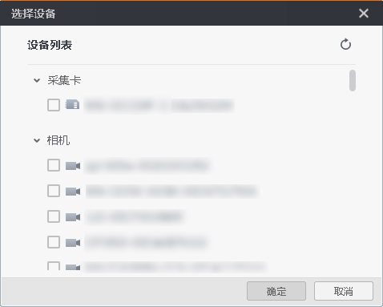
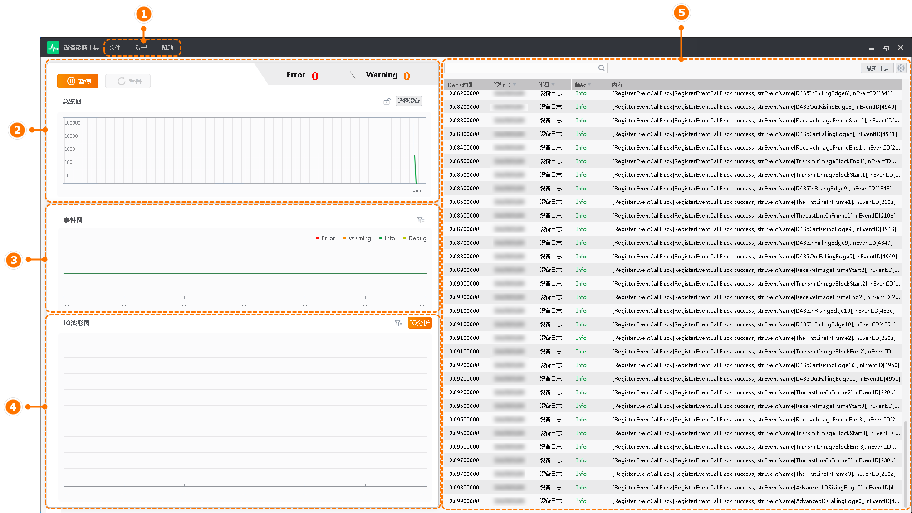

设备诊断工具（本手册简称为“工具”）可实时对设备的运行状态进行监测，包括IO波形、事件和日志消息记录等。
工具支持的采集卡类型请见下表：
|
采集卡类型 |
采集卡接口 |
|---|---|
|
图像采集卡 |
Camera Link采集卡、CoaXPress采集卡、GigE采集卡、10 GigE采集卡（部分型号支持）、XoFLink光口采集卡 |
打开工具后，弹出选择设备界面，如下图所示。

图 1 选择设备勾选需要进行运行状态监测的设备后进入工具主界面，主界面如下图所示，相关说明请见下表。

图 2 主界面